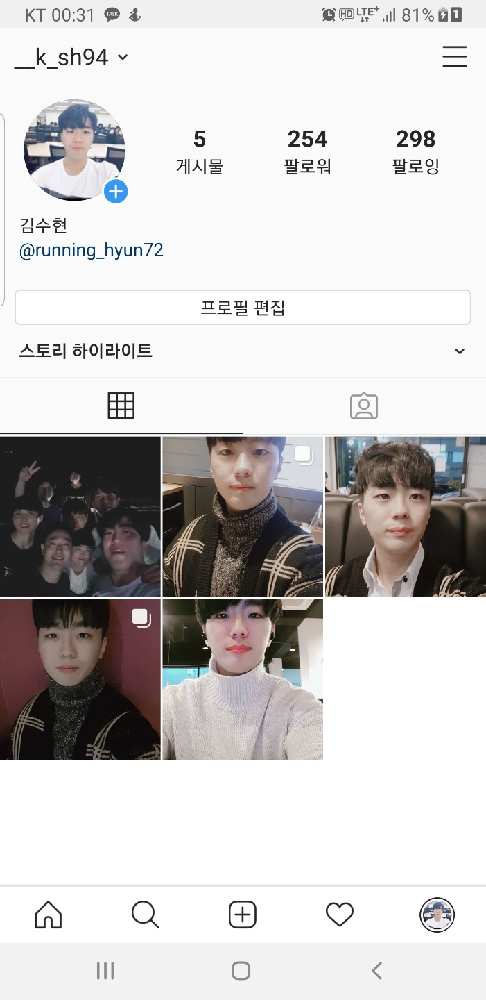
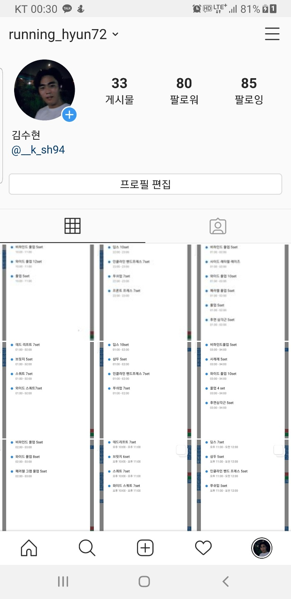

WEB
1.Github
2.Instagram_daily
3.Instagram_running
4.Facebook
5.DropBox_GroupProject_CosmeticEffectPrediction
태그정리html
SuHyun Kim's 홈페이지입니다
 
Suhyun Kim은 미래의
AI분야
자연어처리 전문가
>가 될 것입니다.
#복정#복정역#가천대#가천대역#동서울대#장지#위례#세곡#운동#러닝
#홈트#홈트레이닝#헬스#다이어트#조깅#20대#대학생#맞팔#좋반#태평
#홈트#좋아요반사#성남#저녁#퇴근#스피닝